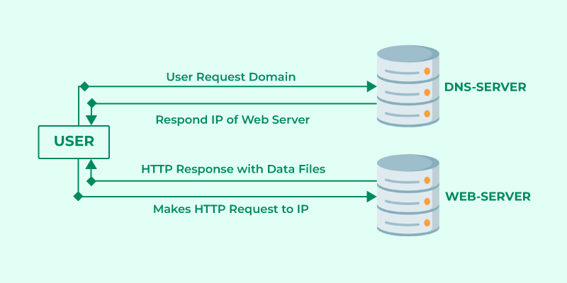
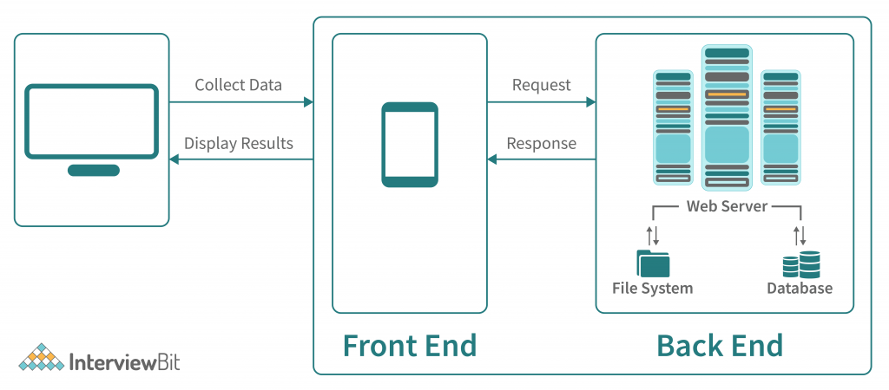
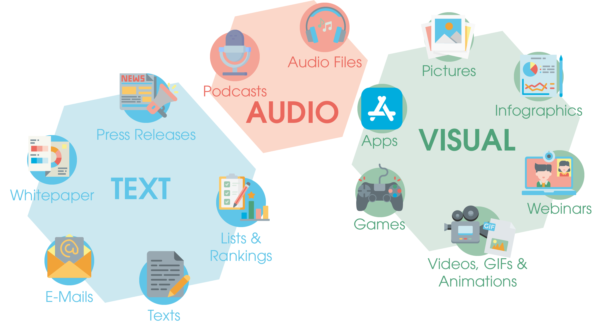
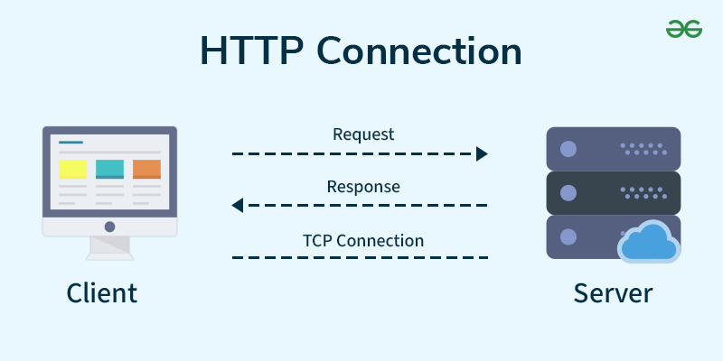
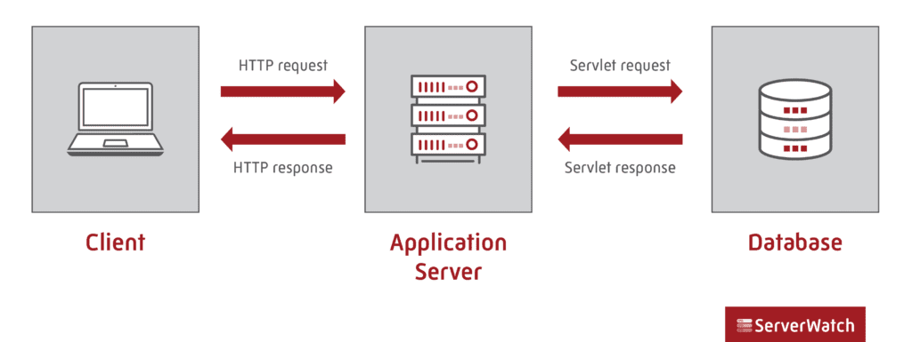
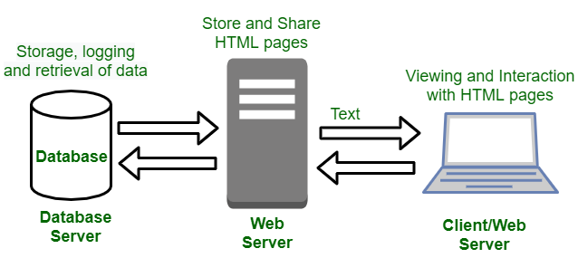
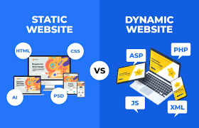

| Client-Server model | Components of web application |
| Types of webcontent | HTTP connection |
| Application server | Web security |
| Dynamic pages | Static vs Dynamic webpages |

The Client-Server Model is a distributed architecture where clients request services and servers provide them.
Clients send requests to servers, which process them and return the results.
Clients don’t share resources among themselves but depend on the server.
Common examples include email systems and the World Wide Web, where clients (like browsers or email apps) interact with servers to access content or send data.
How Does the Client-Server Model Work?
Client
When we talk about a "Client," it refers to a device that requests and receives services from a server.
The client is the entity that initiates communication, asking for data or resources from the server.
For example, web browsers like Google Chrome, Mozilla Firefox or Safari are common client applications that request data from a server to render web pages.
Server
A Server, on the other hand, is a remote computer or system that provides data, resources or services to clients. It listens to incoming client requests, processes them and sends the required information back. A server can handle multiple client requests simultaneously.

A web application is typically composed of three fundamental structural components that interact to deliver functionality to the user:
Client-Side (Frontend):
This component represents the user interface and the interactive elements that a user directly interacts with in their web browser.
It is primarily built using:
HTML (HyperText Markup Language): Provides the basic structure and content of web pages.
CSS (Cascading Style Sheets): Defines the visual styling and layout of the web application.
JavaScript: Adds dynamic behavior, interactivity, and client-side logic.
Frontend Frameworks/Libraries: Tools like React, Angular, or Vue.js streamline development and manage complex user interfaces.
Server-Side (Backend):This component handles the core business logic, data processing, and communication with the database. It is responsible for responding to client requests and managing the application's state.
It often involves:
Server-Side Programming Languages: Languages like Python, Java, PHP, Node.js, or Ruby are used to write the application's logic.
Backend Frameworks: Frameworks like Django (Python), Spring (Java), or Express.js (Node.js) provide structure and tools for backend development.
APIs (Application Programming Interfaces): Define how the client and server communicate and exchange data.
Database:This component serves as the persistent storage for the application's data. It stores information such as user profiles, content, and application settings.
Common database types include:
Relational Databases: Such as MySQL, PostgreSQL, or Oracle, which store data in structured tables.
NoSQL Databases: Such as MongoDB or Cassandra, which offer more flexible data models for specific use cases.

Web content is defined as any writing and all associated digital media, such as text, audio, video, and images published on the internet. Web content is created using many different formats: writing, photography, film, video, and images. It is generally considered a creative expression of thoughts and ideas that may or may not have a commercial purpose.
With today’s society and the growing digital technology, the rate of information bombarding people’s lives has doubled in the last ten years. So, it’s no surprise that people are searching for ways to control their ever-increasing sources of information overload.
There are different types of content on the web that you can use to cater to your audience’s needs. You will have to adjust your strategy depending on what type of content you use, as it directly impacts your site’s performance based on its quality and amount.
Below are the some of most common types of web content:
Text Content
The first and most common type of content found online is text. Unlike other forms of media, the text is easily adaptable, and it can be written in many different styles. It can be formal and professional or casual and personal. This feature of the text is easily adaptable to different audiences and uses.
Text is a continuous series of characters, often without spaces or punctuation, which is represented visually as text in the form of writing, usually in the creator’s language. The text is easily adaptable to different audiences and is used through this feature.
Image-Based Content
Images are becoming more and more popular on the internet, where the following type of content comes in. Images accompany the text and provide visual context for readers when reading text that doesn’t include images. One can also upload images in their own right instead of being added through a short text post. Images are a prominent feature on the web and are created through photographs, graphics, vector art, or video. Images are widely used for branding.
Video Content
Video is another type of content that makes it onto sites’ homepage pages because it’s an effective way to attract attention. Videos can make your site more appealing through emotional appeal and visual appeal. It can be both fun and informative, or severe and educational.
Video is an effective way to attract attention because it’s a continuous series of images, sounds, or video clips represented visually as moving images in the form of communication. Using video on your site will make your site more appealing because it represents information clearly through a visual medium.
Multimedia Content
Multimedia content is considered any online media that includes more than one type of media. The most common forms of multimedia content include audio and video. Audio is music or sound used to show emotion or give spatial depth in a piece of writing. Sounds and music can accompany the images to create a practical effect when delivering a message in the video.
Interactive Content
Interactive content works precisely like a traditional website, except that it includes elements that use computer-based input devices such as computers, game boards, buttons, keyboards, and start-up firms. The user can interact with the content through these devices. Interactive content allows users to experience and play with the content more entertainingly. This type of content appeals to people with an analytical mind and those interested in finding solutions to problems.

HTTP connections made between a client and a server are not created in an end-to-end manner. Rather, they are made on a hop-by-hop basis,
which means that the first HTTP connection is opened between the client and the first intermediary, or proxy, between it and the server. A new HTTP connection is created between each intermediary and finally, there is a new one between the final intermediary node and the server.
This is important because intermediate nodes can use their own parameters for specifying HTTP connection types, and a single end-to-end trip can consist of different ones. This can affect both performance and stability.
HTTP Connections:
i)Non-Persistent
Non-Persistent Connections are those connections in which for each object we have to create a new connection for sending that object from source to destination. Here, we can send a maximum of one object from one TCP connection.
ii)Persistent
1. Non-Pipelined Persistent Connection: In a Non-pipeline connection, we first establish a connection that takes two RTTs then we send all the object's images/text files which take 1 RTT each (TCP for each object is not required).
2. Pipelined Persistent Connection: In Pipelined connection, 2RTT is for connection establishment and then 1RTT(assuming no window limit) for all the objects i.e. images/text.

An Application Server provides a more comprehensive environment for running enterprise applications. It includes both a web container and an EJB (Enterprise JavaBeans) container, supporting a wide range of applications, including dynamic content and complex business operations. Application servers handle not just HTTP, but also other protocols like RMI (Remote Method Invocation) and RPC (Remote Procedure Calls), making them suitable for hosting both the logic and user interface of applications.
Examples of Application Server:
Web security is about keeping websites, servers, users, and devices safe from cyberattacks that come through the internet.
These attacks can include things like viruses, fake emails (phishing), and other harmful activities that can steal or leak important information.
To stay protected, web security uses different tools and methods, such as firewalls, systems that block suspicious activity, filters that block dangerous websites, and antivirus software.
It also covers the security of Web Apps, APIs, and cloud systems to keep everything running safely online.
For example- when you are transferring data between client and web server and you have to protect that data, that security of data is your web security.
Latest Trends in Web Security
In today’s digital landscape, cybersecurity is evolving rapidly to counter increasingly advanced threats. Cybercriminals are growing smarter by the day, leading to a rise in data breaches through phishing attacks, ransomware, social engineering, and IoT-based threats. These attacks can result in serious consequences, including financial loss, reputational damage, and legal implications.
As a result, it has become crucial for both individuals and organizations to stay up-to-date with the latest cybersecurity technologies. Proactively adapting by implementing smarter technologies, stronger access controls, and improved development practices is essential. These modern approaches help prevent cyberattacks, safeguard sensitive data, ensure user safety, and maintain the integrity of business operations

Dynamic Website is a website containing data that can be mutable or changeable. It uses client-side or server scripting to generate mutable content. Like a static website, it also contains HTML data.
Dynamic websites are those websites that changes the content or layout with every request to the webserver. These websites have the capability of producing different content for different visitors from the same source code file. There are two kinds of dynamic web pages i.e. client side scripting and server side scripting. The client-side web pages changes according to your activity on the web page. On the server-side, web pages are changed whenever a web page is loaded.
Example: login & signup pages, application & submission forms, inquiry and shopping cart pages.
Features of dynamic webpage:

| Static Webpages | Dynamic Webpages |
|---|---|
| In static web pages, Pages will remain same until someone changes it manually. | In dynamic web pages, Content of pages are different for different visitors. |
| Static Web Pages are simple in terms of complexity. | Dynamic web pages are complicated. |
| Static Web Page takes less time for loading than dynamic web page. | Dynamic web page takes more time for loading. |